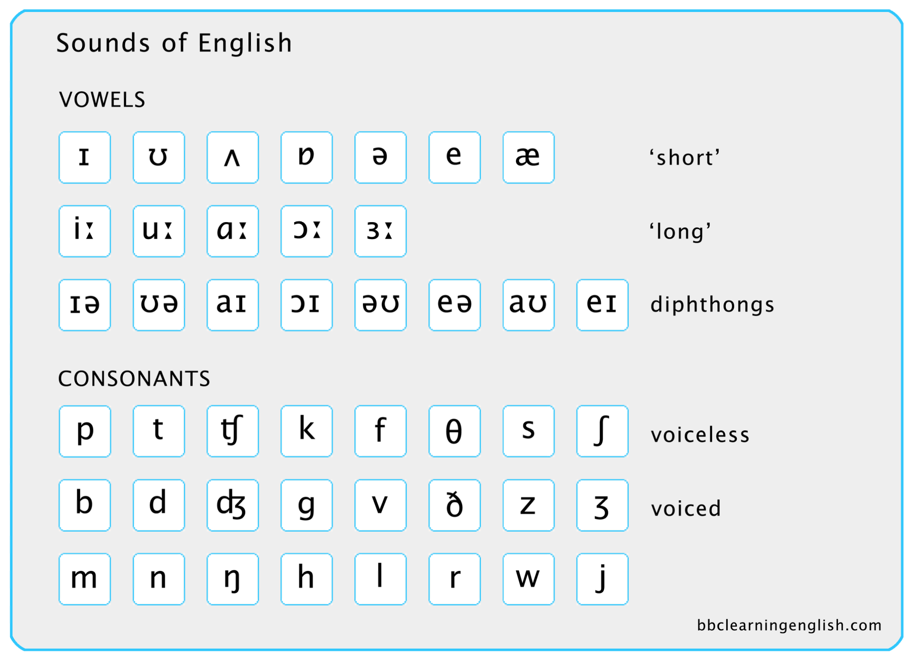

There are many ways to learn a language. But I am not sure all of them would be effective. After years of learning one of the most popular languages - English, I come to realize the importantce of pronunciation. This post is one of a series of posts that introduce features of British English pronunciation, explain the relationship between pronunciation and spellings, and discuss how awareness of the importance of pronunciation would help you to imporve your listening, reading and even writing.
Since I am not an English native speaker, I would just follow the programmes presented by BBC to share how I study English pronunciation. You could visit this site and study by yourself with intructions there.
Even though there are only 26 letters in English, there are roughly 44 different sounds (by the way, there are 52 white kyes on a piano). Like the system of music, we also need use symbols to represent those sounds. Some of these symbols look the same as letters and some are very different. You can use these symbols to write out the pronunciation of words like you write out the music in a music sheet. You could read words out by checking any dictionary that normally uses these symbols too. Here is English phonemic chart (download the chart).  Here are some tips for you to differentiate those sounds:
Here is the video you should watch, watch and watch it again and again.